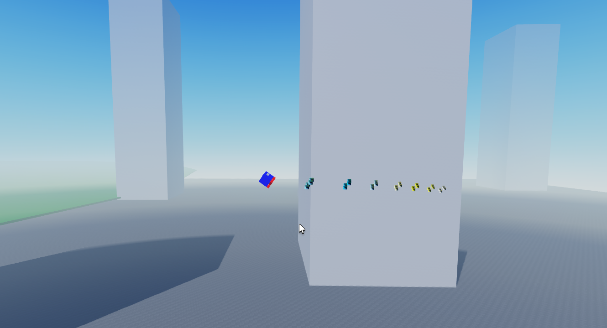

About:
This was another one of my favorite projects in which I've spent many hours just messing with the result.. It functions like an actual rocket and uses controls like a quadcopter. As a rocket, the yaw (rotation left and right) must be countered after rotating (since no air resistence). There is also a reset orientation button since crashing is inevitable.
How it works:
This project gives each player a value to check if they are in a rocket then allows the player to choose one. The game then gives the character ownership of vehicle (a roblox network propery) which allows the player to control it. The rocket works by 4 imaginary 'thrusters' which control it's movements upwards and around, with 2 others that adjust the yaw. The script checks for WASD, Q, E, Shift, R and Space- which each allow the rocket to do corresponding actions. The rocket uses actual forces to replicate actual rockets and so speeds can become very quick.
Flaws:
This project is perfect to me, however- if I were to commercialize it I would attempt to make the controls easier (Controlling a rocket on a keyboard can never be easy) and I would also make the rockets look a bit more professional- along with a better map. I would also consider creating some sort of game system as it's just an open world flying thing (Which I find quite enjoyable myself.) Another potential thing would be not necessarily to add air resistence but to create some sort of slowing down effect for yaw instead of making user micro-correct everything (which I also like but others might not)
Learned:
This project I learned a ton about integrating forces with objects and roblox network ownership to allow users to have control of some objects. I also learned a lot about sequential functions in order to make key presses have the desired effect- for example pressing W makes the back two rockets activate and shift will activate all (Similar to drones, the rocket must be facing forwards- easy to identify with image on rocket.)
Used:
- Roblox Studio
- Luau